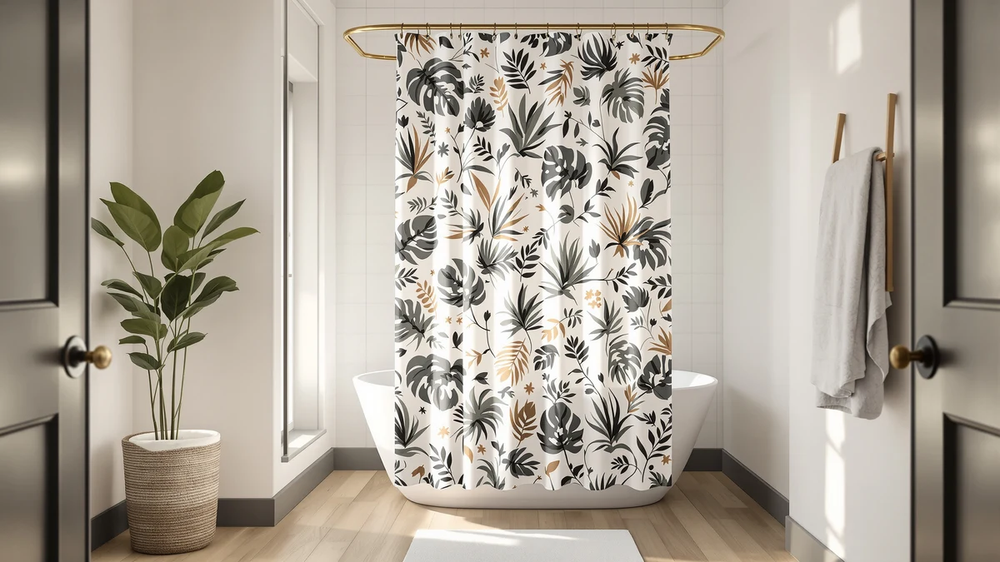

RnnJoile Tropical Shower Curtain Review (2026): Worth It?
Prices and picks verified as of November 2026. Independent, reader-supported reviews.


Quick Answer
The RnnJoile Tropical Shower Curtain Green pairs a printed palm leaf design with 12 included hooks, so you skip the separate hook purchase that two of the three alternatives below still require. At $19.92 for a 72 by 72 inch curtain, it holds a 5 out of 5 rating from five verified reviews, a small sample worth weighing against the deeper track record some of the alternatives carry. If you want a liner bundled in or a rating built on thousands of reviews instead, the Colorful Star and Madison Park Spa picks below cover those gaps.
Our pick: RnnJoile Tropical Shower Curtain Green at $19.92 Check Price on Amazon
Bottom line: our top pick is the RnnJoile Tropical Shower Curtain Green and Gold Bath Curtain at $19.92.
Things to Know Before You Buy
- RnnJoile ships with 12 curtain hooks already included, a detail none of the three Madison Park and Colorful Star alternatives below offer on their own.
- The curtain measures a standard 72 by 72 inches and uses a polyester and PEVA blend, per the product specs.
- Amazon shows a 5 out of 5 rating from five verified reviews on this exact listing, a small sample worth noting, not yet a settled track record.
- The green and gold tropical palm leaf print sets it apart from the solid and striped alternatives below, which matters if pattern is the deciding factor for your bathroom.
- No liner ships with this curtain, so factor that into your total cost if you don't already own one.
This RnnJoile Tropical Shower Curtain review exists because the palm leaf print keeps showing up in searches for colorful, budget-friendly bathroom decor, and we wanted to know whether the fabric, the included hooks, and the handful of reviews back up that visibility. RnnJoile built this curtain around a printed green and gold tropical design on a polyester and PEVA blend, and unlike most curtains in the $20 range, it ships with 12 hooks already in the box. At 72 inches wide and 72 inches long, it fits a standard shower opening without requiring you to special-order a longer or narrower size, which keeps the shopping decision simple.
We compared this listing against its own specs, Amazon's current pricing, and the five verified reviews posted so far, since that's all the public feedback available for this exact ASIN. Shoppers clearly respond well to the included hooks and the pattern, both of which save a separate purchase and a design decision, but five reviews is a thin sample next to the Madison Park Spa curtain below, which carries more than eleven thousand. The tradeoff with RnnJoile is pattern and convenience now, against a track record you'll mostly have to take on faith for the moment.
Why You Should Trust Us
Ilane Tall covers bathroom hardware and textiles for Best Shower Curtains, and this RnnJoile Tropical Shower Curtain review follows the same method used across this site: comparing manufacturer specs, current Amazon pricing, and verified owner feedback instead of running a physical test lab. We do not buy, install, or live with every curtain we cover, and we say so plainly rather than implying otherwise. For this review, we focused on the included hooks, the printed tropical design, the 72 by 72 inch sizing, and how the listing holds up against three similarly priced alternatives in the same bathroom decor category.
Our Research Experience
We did not hang this curtain in a bathroom ourselves. Instead, we pulled RnnJoile's stated specs, including the polyester and PEVA blend and the 72 by 72 inch size, and set them against the other printed and solid curtains available near the same $19.92 price point. The five verified reviews currently posted for this RnnJoile Tropical Shower Curtain all land at 5 out of 5, which is a positive early signal, though a sample that small can shift quickly once more buyers weigh in. We treat that rating as a starting point rather than a settled verdict, and we weighed it against the much larger review counts behind some of the alternatives below, along with the features those competitors bundle that RnnJoile leaves out, like a liner or a mesh window.
Overview & Specs

RnnJoile Tropical Shower Curtain Green
What we like
- Ships with 12 curtain hooks included, saving a separate purchase
- Printed green and gold tropical palm leaf design stands out from the solid and striped alternatives
- 5 out of 5 rating from the reviews posted so far
- Standard 72 by 72 inch size fits most shower openings without special ordering
Flaws but not dealbreakers
- No liner included, so budget for one separately if you don't already own one
- Only five verified reviews so far, a thin sample for judging long-term durability
- The printed design won't suit bathrooms built around a more minimalist or solid look
| Material | Polyester / PEVA |
| Size | 72x72 |
RnnJoile markets this curtain around its printed tropical palm leaf pattern in green and gold, and the design is the main differentiator against the solid and striped options covered below. Unlike those competitors, RnnJoile includes 12 curtain hooks in the box, which covers a cost and a decision that every other curtain here leaves to you. At 72 inches wide and 72 inches long, it fits the standard shower opening most households already have, so there's no need to special-order a longer or narrower cut.
The five reviews posted for this exact listing all land at 5 out of 5, a clean early track record, though the sample is too small to treat as proof of long-term durability the way the Madison Park Spa curtain's eleven-thousand-plus reviews can. The curtain uses a polyester and PEVA blend per the specs sheet, a common combination that balances drape with water resistance, but it ships without a liner, so factor that into your total cost if you're starting from scratch.
What We Liked
The included hooks are the clearest advantage of this RnnJoile Tropical Shower Curtain. Every other curtain in this comparison makes you buy hooks separately, and at $6 to $10 a set, that's a real savings baked into the $19.92 price. The printed palm leaf design in green and gold also gives you an actual decorative statement instead of the solid or subtly striped look of the Madison Park and Colorful Star alternatives, which matters if you're decorating around a tropical or botanical theme.
Reviewers who left feedback on this listing all gave it a full 5 out of 5, and while five reviews is a small sample, a clean rating with no complaints yet is still a better starting signal than no rating at all, which is what two of the three alternatives currently show on Amazon. The standard 72 by 72 inch sizing also means you won't need to measure your shower rod before buying, since it matches the opening most households already have.
What Could Be Better
The biggest gap is the missing liner. RnnJoile sells this as curtain and hooks only, so if you don't already own a liner, budget another $8 to $12 for a basic PEVA liner to keep water off your floor, which brings the realistic total closer to $28 to $30 instead of the $19.92 sticker price. Colorful Star's alternative below solves that specific gap by bundling a snap-in liner into its own listing.
The other limitation is the review count itself. Five verified reviews is enough to see an early pattern, but it isn't the kind of track record the Madison Park Spa curtain has built with more than eleven thousand reviews, and buyers who weigh review volume heavily before purchasing should treat that gap as a real factor rather than a footnote.
Who Is It For?
This RnnJoile Tropical Shower Curtain fits households that already own a liner and want a patterned curtain with hooks included in one purchase, instead of shopping for hooks and a curtain separately. It also suits anyone decorating around a tropical, botanical, or green and gold color scheme, since the print is the most distinctive option in this comparison. Buyers who'd rather have a bundled liner or a rating backed by thousands of reviews should look at the alternatives below instead.
Alternatives to Consider
If the small review count or the missing liner on this RnnJoile Tropical Shower Curtain gives you pause, here are three curtains in the same roughly $19 to $20 price bracket that solve one or both of those gaps.

Also Great
Colorful Star No Hook Shower
Colorful Star trades RnnJoile's tropical print for a solid navy waffle weave, but it bundles a snap-in fabric liner and a mesh top window into the same $19.79 listing, neither of which RnnJoile includes. The 130 GSM polyester is also marketed as water repellent on top of the liner, so you get two layers of protection instead of one. This listing has no public rating yet, so you're weighing a bundled liner and extra water protection against RnnJoile's small but clean 5 out of 5 track record.
$19.79
Check Price on Amazon
Also Great
Madison Park Amherst Bathroom Shower
Madison Park's Amherst curtain swaps the tropical pattern for a pieced, striped faux silk look that reads more formal than RnnJoile's palm leaves, and the microfiber fabric is OEKO-TEX certified for anyone sensitive to treated textiles. Like RnnJoile, it ships without a liner and without hooks, so you'd still need both purchases on top of the $19.69 price. This listing currently shows no public rating to compare against RnnJoile's five reviews, so the pattern and certification are the deciding factors here, not a proven track record.
$19.69
Check Price on Amazon
Best Value
Madison Park Shower Curtain Spa
The Madison Park Spa curtain is the cheapest of the four at $19.13, and its 4.7 rating from more than eleven thousand reviews is the deepest track record in this comparison by a wide margin. It also adds 3M Scotchgard moisture management, a treatment none of the other three curtains mention. The catch is sizing: at 36 by 72 inches, it's built for a narrow stall shower, not the standard 72 by 72 inch opening RnnJoile and the other two alternatives fit, so measure your shower before treating the rating as a reason to switch.
$19.13
Check Price on AmazonDoes the RnnJoile Tropical Shower Curtain come with hooks?
Yes.
What size is the RnnJoile Tropical Shower Curtain?
It measures 72 inches wide by 72 inches long, the standard size that fits most shower openings without special ordering a longer or narrower cut.
Frequently Asked Questions
A few quick answers that come up often in this RnnJoile Tropical Shower Curtain review.
Does the RnnJoile Tropical Shower Curtain come with hooks?
Yes. This listing ships with 12 curtain hooks included, so you don't need a separate purchase to hang it, unlike most of the alternatives in this comparison.
What size is the RnnJoile Tropical Shower Curtain?
It measures 72 inches wide by 72 inches long, the standard size that fits most shower openings without special ordering a longer or narrower cut.
Does the RnnJoile Tropical Shower Curtain include a liner?
No. RnnJoile sells this as the curtain and hooks only, so budget roughly $8 to $12 for a separate liner if you don't already own one.
Final Verdict
This RnnJoile Tropical Shower Curtain review comes down to a straightforward tradeoff: RnnJoile pairs a distinctive green and gold tropical print with included hooks and a clean, if small, 5 out of 5 rating, while the alternatives trade that pattern and convenience for a bundled liner, a certification, or a much deeper review history. If you want a patterned curtain with hooks already in the box and don't mind a separate liner purchase, RnnJoile is worth the $19.92. If you'd rather lean on thousands of reviews or get a liner bundled in, the Madison Park Spa curtain or Colorful Star's waffle weave set covers that gap instead.